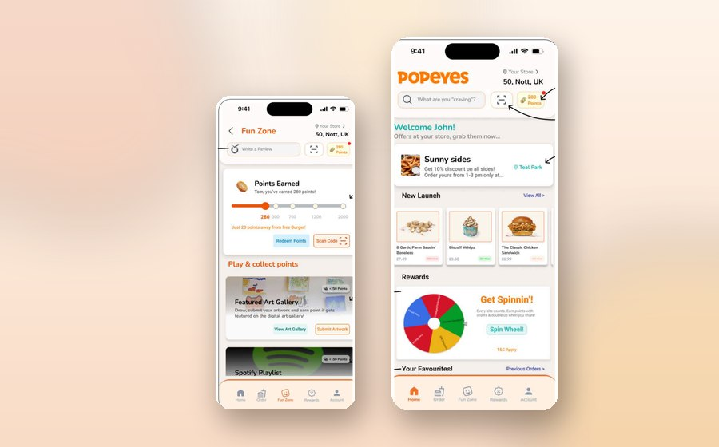

Self-initiated · Brand & Loyalty · 2025
Popeyes UK Glow-Up
An unprompted brand refresh built from in-store field research: store-first quick wins, then a gamified loyalty app with a spin wheel, Fun Zone and playful notifications. Presented to and shortlisted by Popeyes' digital team.
Read case study · earn the poppy →